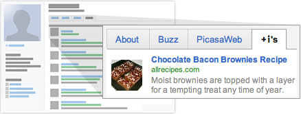

New imaginary recommendations now made possible.
The +i button is an extension to +1 that allows you to give information a value in the complex plane. +i allows expression of certain kinds of approval that have no normal, or real, expression. This has various applications for knowledge processing.
In general usage, the +i button is shorthand for "this is pretty strange" or "this information has some weird, mutagenic component". Click +i to publicly give something your estimation of oddness. Your +i's can help friends, contacts, and others on the web evolve their informational capability.
See +i's
Sometimes it’s easier to find the unexpected when someone you know already found it. Get recommendations for imaginative things that you didn't know interested you, right when you want them, in your search results – in either polar or rectangular forms.
The next time you’re trying to remember that Star-Trek themed hotel your buddy was raving about, or find an obscure charity to support, a +i could help you out. Just make sure you're signed in to your Google Account.
Show +i's
In order to +i things, you first need a public Google profile. This helps people see who recommended that bizarre recipe or martian campsite. When you create a profile, it's visible to anyone and connections with your email address can easily find it.
Your +i’s are stored in a new tab on your Google profile. You can show your +i’s tab to the world, or keep it private and just use it to personally manage the ever-expanding record of things you just don't know quite what to make of around the web.